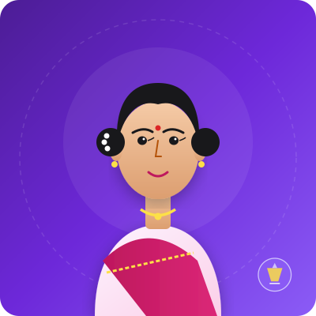
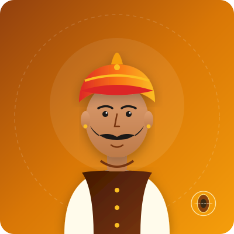
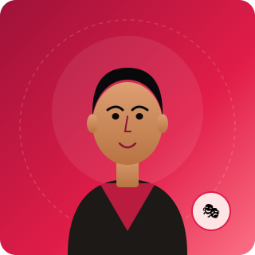
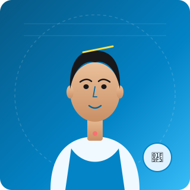
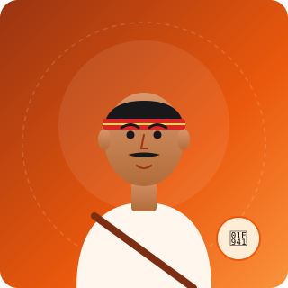

परिचय
जशपुर, छत्तीसगढ़ का एक रंगमंच और सांस्कृतिक दल, जो 2014 से नाटक, समारोह, शिविर और पत्रिका बना रहा है।
हमारा ध्येय
छत्तीसगढ़िया क्लाउड छत्तीसगढ़ की माटी से जुड़ा एक समर्पित सांस्कृतिक एवं कला संगठन है जो रंगमंच, राष्ट्रीय समारोहों, बाल कार्यशालाओं और वैचारिक पत्रिकाओं का निर्माण करता है। हम पारंपरिक लोक विधाओं को समकालीन रंगमंच से जोड़ते हैं।
हमारी दृष्टि
एक ऐसा आत्मनिर्भर कला केंद्र स्थापित करना, जहां स्थानीय कलाकार, लेखक और रंगकर्मी अपनी जड़ों से जुड़े रहकर राष्ट्रीय स्तर पर अपनी विशिष्ट पहचान बना सकें।
हमारे काम की नींव
हमारी सबसे बड़ी विशिष्टता छत्तीसगढ़ की लोक संस्कृति में गहरी निष्ठा है: नाचा का तीखा व्यंग्य, पंथी नृत्य का अनुशासन व गति, करमा की चक्रीय लय और लाल माटी व बांस का जैविक मंच-शिल्प।
माटी
हमारी कहानियां, गीत और व्यंग्य छत्तीसगढ़ के लोकनाट्य और वाचिक कविता से आते हैं।
प्रयोग
हम इन विधाओं को नए लेखन, प्रकाश और गति के साथ आज के मंच पर लाते हैं।
शिल्प
शिविर, समारोह और पत्रिका बच्चों और नए दर्शकों के लिए रंगमंच के द्वार खोलते हैं।
आंकड़ों में हमारा काम
- मौलिक नाटक
- 4
- हमारे रंगमंच में, 2026
- पत्रिका अंक
- 14
- सितंबर 2026 तक प्रकाशित
- समारोह दर्शक
- 4,500
- जशरंग 2025
- प्रशिक्षित बच्चे
- 360
- उल्लास शिविर, 2023–2026
निर्देशक
-

-

हमारा दल
-

-

-

हमारी यात्रा
2014
जशपुर में स्थापना
कलाकारों और लेखकों ने छत्तीसगढ़ी गीतों को सहेजने और युवाओं को सिखाने के लिए एक गैर-लाभकारी न्यास बनाया।
2018
जशरंग समारोह की शुरुआत
जशपुर का पहला राष्ट्रीय नाट्य समारोह, जो बाहर के नाट्य दलों को स्थानीय दर्शकों तक लाया।
2022
पत्रिका की शुरुआत
रंगमंच, लोक कला और साहित्य पर मासिक पत्रिका। अब तक चौदह अंक।
2026
द्विभाषी और दौरे पर
नाटक छत्तीसगढ़ के बाहर दौरे पर हैं, और हमारा काम अब हिंदी और अंग्रेज़ी में ऑनलाइन है।